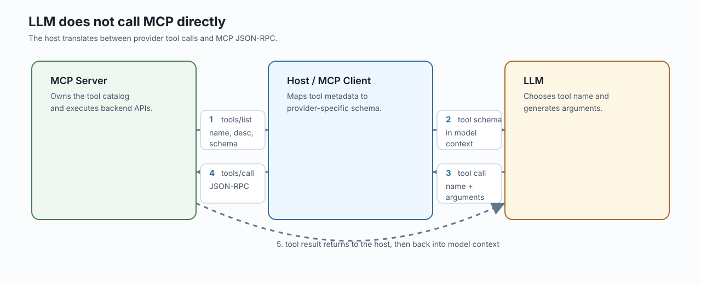

slides
MCPを開発現場でどう使うべきか
社内発表向けMCP解説、要所のQ&A、JSON-RPC payload、CLI/ブラウザ比較、MCPサーバー構築、Remote MCP、開発向けMCP調査
MCPを開発現場でどう使うべきか
外部操作を安全に標準化し、Agent Skillsと組み合わせて反復業務を定型化する。
2026-06-08
00 / 全体像
なぜ今この話か
LLMが外部情報を得て、指示を出し、実アクションする経路が急に増えている。
- Function/tool calling: modelが
name + argumentsを生成する - Built-in tools / connectors: web search、file search、SaaS data、Remote MCP
- Apps SDK / ChatGPT Apps: MCP server + iframe UIでアプリ体験を作る
- Codex App: skills、plugins、MCP、browser use、computer use、terminalを組み合わせる
- WebMCP / A2A: frontend上のtool化、agent間連携も出てきている
MCPは単独の流行ではなく、LLMが外部世界を扱う設計面が増えている現象の一部。
 GitHub開発データとaction
GitHub開発データとaction Cursor / IDE開発現場のagent入口
Cursor / IDE開発現場のagent入口00 / 全体像
今日の結論
MCPは「便利な拡張」ではなく、AI Agentに外部systemを使わせるための運用設計。
- 外部操作: UI推測ではなく、tool/resource/schemaで宣言する
- 安全性: auth、scope、approval、audit、trusted serverを前提にする
- 定型化: Agent SkillにMCPの使い方を入れると後半の作業が型になる
- 制限: Figma MCPのように、plan/seatごとの呼び出し予算も設計対象になる
この4点を軸に、既存API・開発tool・業務SaaSをagent-nativeな接続面として見直す。
00 / 全体像
LLMが外部世界を使う選択肢
| 選択肢 | LLMが得る情報 | アクションの形 | 強い場面 |
|---|---|---|---|
| Function calling | tool名、description、schema | app側関数呼び出し | 自前アプリ内の軽量tool |
| Built-in tools | provider定義tool | search / file / computerなど | すぐ使える標準能力 |
| Connectors / Remote MCP | SaaS/APIのtool catalog | authenticated tool call | 組織data、業務SaaS |
| Agent Skills | 手順、判断基準、参照資料 | workflow orchestration | 反復支援の型 |
| Codex plugins/apps | skills、apps、MCP、browser/computer | repo操作、外部app操作 | 開発・調査・レビュー |
| WebMCP | HTML/JSで宣言されたpage capability | browser内agent action | frontend上の構造化操作 |
| A2A | 他agentのcapability/task | agent間message/task | 複数agent協調 |
この地図の中で、MCPは外部systemをagent向けに宣言する標準接続面。
00 / 全体像
Agent Skills + MCPで支援範囲が広がる
Skillは「どう進めるか」、MCPは「何を読める/実行できるか」を持つ。
| レイヤー | 役割 | 開発現場での例 |
|---|---|---|
| Agent Skill | 手順、判断基準、検証、出力形式 | PR review、incident triage、release手順 |
| MCP server | live data/action、認証、schema、承認 | GitHub、Sentry、Slack、AWS、社内API |
| Plugin/App | Skill + App + MCPを配布単位にする | team workflow package |
結果としてAI Agentは、助言だけでなく調査 -> 実行 -> 検証 -> 報告まで支援できる。
00 / 全体像
SkillにMCP利用手順を入れると後半が定型化する
MCP serverを接続するだけでは、agentは「使えるtool」を知るだけ。
Skillに順序・判断基準・検証条件を書くと、後半の作業が再利用可能な型になる。
Skill: PR修正手順
1. GitHub MCPでreview commentを読む
2. Serenaで関連symbolだけ調べる
3. patchを当てる
4. testを実行する
5. GitHub MCPで結果を報告するポイントは、MCPを「個別tool」ではなくworkflowの部品として扱うこと。
00 / 全体像
このスライドで着目すること
広い選択肢の中で、この発表はMCPを既存APIをagent-nativeにする設計手段として扱う。
- 主眼: MCP serverの構築、description/schema、auth、Remote運用、Skill連携
- 比較対象: CLI、browser、function calling、Agent Skills、WebMCP、A2A、Codex App
- 判断軸: token使用量、再現性、承認、監査、呼び出し制限、provider control
- 実装例: FastAPI / OpenAPIをMCP serverへ変換する設計
結論を先に言うと、反復的なservice/data/action境界は、UI操作やCLI推測よりMCP化した方が運用しやすい。
00 / 全体像
本日の流れ
- 基本概念: Host / Client / Server / Tool / Transport
- 比較と判断軸: CLI / Browser / API / MCPの使い分け
- MCP server構築: 既存APIをagent向けadapterにする
- Remote MCPと複数Agent設定: Claude接続、project/user/org管理
- Protocol / Auth / JSON-RPC: 接続フローとtool callの中身
- AWSケーススタディ: AgentCore Gateway / IdentityでRemote MCPを運用する
- 開発ワークフロー: WebMCP、Figma、Playwright、Chrome DevTools、Serena
- ガバナンスと導入: 争点、ロードマップ、社内ルール、呼び出し予算
基本概念から順番に積み上げ、疑問が出やすい箇所だけQ&Aで補足する。
Chapter 01
基本概念
MCPを構成する言葉と責務を揃える
01 / 基本概念
まず押さえる用語
| 用語 | 何を指すか | この発表での見方 |
|---|---|---|
| Agent | LLMを使って作業を進める実行主体 | 判断し、toolを選ぶ側 |
| Host | Claude / Cursor / VS Codeなどの実行環境 | MCP接続と承認を管理する側 |
| MCP Client | Host内でserverと通信する部品 | JSON-RPCを送受信する側 |
| MCP Server | 外部機能をtool/resourceとして公開する部品 | 既存APIをagent向けに整える側 |
最初に分けるべきは「賢いmodel」ではなく、modelを囲む実行境界。
01 / 基本概念
MCPとは？
Model Context Protocol。AI agentが外部のdata / action / workflowを使うための標準protocol。
- 何を公開するか: tool、resource、prompt
- どう説明するか: name、description、input schema、output schema
- どう運ぶか: stdio、Streamable HTTPなどのtransport
- どう守るか: auth、scope、approval、audit、rate limit
MCPは「LLMを賢くする技術」ではなく、LLMが安全に外部世界へ出るための接続契約。
01 / 基本概念
Host / Client / Serverとは？
- Host: user、model、tool承認、接続設定をまとめる
- Client: MCP protocolを話す通信部品
- Server: agent向けに機能を宣言して実行する
- Backend: 既存のSaaS、API、DB、社内system
MCP serverはbackendそのものではなく、agent向けadapterとして設計する。
IDE HostCursorなどの開発環境Server / BackendGitHub、SaaS、社内API01 / 基本概念
Tool / Resource / Promptとは？
| 種類 | 役割 | 例 |
|---|---|---|
| Tool | agentが実行できるaction | search_items, create_issue, deploy_stack |
| Resource | agentが読めるcontext/data | file、log、ticket、schema、document |
| Prompt | 再利用できる指示template | incident調査手順、PR review手順 |
開発で最初に使うのは多くの場合tool。
ただし良いMCP serverは、actionだけでなく判断材料となるresourceも一緒に設計する。
01 / 基本概念
Protocol / Transportとは？
- Protocol: どんなmessageを、どんな順序でやり取りするか
- Transport: そのmessageをどう運ぶか
- JSON-RPC: MCP messageの基本的なenvelope
- Auth: 誰が、どのscopeで、どのserver/toolを使えるか
MCP protocol message
initialize -> tools/list -> tools/call
Transport
stdio: local processのstdin/stdout
Streamable HTTP: remote endpoint over HTTPS後半のJSON-RPCやRemote MCPは、この用語の上に乗る。
Chapter 02
比較と判断軸
CLI、Browser、API、MCPを使い分ける
02 / 比較と判断軸
なぜMCPが必要なのか
AIエージェントが外部システムを安全に使うための標準インターフェースを作る。
- 外部システム: GitHub、AWS、Sentry、DB、社内API、ブラウザ、Docs
- できること: context取得、tool実行、workflowの再利用
- 重要点: tool名、description、schema、auth、transport、approvalをプロトコルで扱う
MCPは「AIに便利ツールを足す」ではなく、agent-nativeなAPI境界。
02 / 比較と判断軸
CLI / Browser / MCPの違い
| 方式 | agentが見るもの | 強い場面 | 弱い場面 |
|---|---|---|---|
| CLI | command + stdout/stderr | local test、build、git、devops | flags/env/output量に依存 |
| Browser | UI、DOM、screenshot、DevTools | visual QA、live UI、session依存 | layout/selector/loadingに依存 |
| MCP | tool/resource schema + structured result | repeatableなAPI/data/action | server設計と運用が必要 |
判断軸は「人間向けインターフェースか、agent向け契約か」。
02 / 比較と判断軸
Q. CLIで叩けばよくない？
A. CLIは今でも強い。ただしagentには余計な推測と出力が多い。
- command syntax、flags、profile、region、envをagentが推測する
- stdout/stderrは人間向けで、ログやstack traceが巨大になりやすい
- エラー原因の切り分けに追加commandが増える
- 出力を絞るには
jq、grep、--jsonなどを毎回設計する必要がある
CLIはlocal executionに最適。外部サービスの反復操作はMCPの方が安定しやすい。
02 / 比較と判断軸
Q. ブラウザ操作で十分では？
A. UIそのものを見るなら必須。データ取得や操作の主経路にすると不安定。
- page遷移、modal、loading、viewport、selector変更に弱い
- screenshotやaccessibility treeはcontextを消費しやすい
- UIから意図を推測するため、操作ミスや待機ミスが起きやすい
- ただしvisual QA、console/network、performance、実ブラウザ再現には強い
ブラウザ操作は「UIの検証」、MCPは「宣言された機能の実行」と分ける。
02 / 比較と判断軸
Token効率で見る違い
厳密値はclient/model/result次第。ここでは同一タスクの代表的なcontext消費として見る。
| タスク | CLI | Browser | MCP |
|---|---|---|---|
| PR状態 + 失敗CIログ確認 | 3k-20k | 5k-30k | 800-4k |
| 最新docs検索 | 2k-15k | 5k-25k | 500-3k |
| issue/PR作成 | 1k-8k | 5k-20k | 500-2k |
| UI console/network調査 | 3k-20k | 4k-25k | 1k-8k |
| 運用データ照会 | 2k-30k | 5k-30k | 800-5k |
MCPはtool search、schema、pagination、structured resultでcontextを小さくできる。
02 / 比較と判断軸
Token使用量の比較イメージ
- 上3つは同一タスクを行うときの代表レンジ。client/model/result設計で変わる。
- 最下段はAnthropic公開例: 5 MCP servers / 58 toolsでrequest前に約55K tokens。
- 重要なのは「MCPなら常に少ない」ではなく、tool surfaceを絞る、検索する、結果をboundedにすること。
02 / 比較と判断軸
公開例: tool定義を全部読むと重い
Anthropicの例では、tool searchで約77K -> 約8.7K、programmatic tool callingで43,588 -> 27,297 tokensへ削減。
MCP server設計でも、全部見せる設計はtoken・latency・誤選択を増やす。
02 / 比較と判断軸
MCPがフローを安定させる理由
agentが低レベル操作を推測せず、宣言済みcapabilityを呼べるから。
tools/list: 何ができるかを発見するinputSchema: 必要な引数と型がわかるdescription: いつ使うべきか、制約は何かがわかるstructuredContent: 返り値を機械的に扱える- host UI: sensitive tool callを承認フローに載せられる
「画面を見て推測」や「CLI flagsを思い出す」から「定義済みtoolを呼ぶ」へ移る。
02 / 比較と判断軸
CI調査で見る利用フロー
CLI:
gh pr view --json statusCheckRollup
gh run list --branch <branch>
gh run view <run-id> --log-failed
grep / jq / sedで絞り込み
Browser:
PR pageを開く -> Checksを探す -> failing checkを開く
log UIで検索 -> tabや表示状態を調整
MCP:
github.get_pull_request(number)
github.list_check_runs(ref)
github.get_failed_check_log(run_id, max_lines=200)MCPの価値は、サービス側が「agentに必要な粒度」でtoolを切れること。
02 / 比較と判断軸
Q. MCPが向かない場面は？
- local build/test、package scripts、任意shell調査
- UIの見た目、layout、accessibility、performance確認
- 一度だけのadhoc作業でserver化する価値が薄いもの
- 信頼できるMCP serverがないサービス
- 広すぎる権限や雑なdescriptionで、agent-safeではないserver
MCPは万能ではない。反復的なservice/data/action境界を標準化するもの。
02 / 比較と判断軸
サービス提供者視点のMCP
| 提供面 | 主な利用者 | agent適性 | provider control |
|---|---|---|---|
| Browser UI | 人間 | 低-中 | 見た目は制御、machine契約は弱い |
| CLI | 開発者/運用者 | 中 | 便利だが出力・権限が広がりやすい |
| REST/OpenAPI | アプリ | 中-高 | 契約は強いがagent用説明が不足しがち |
| MCP | AI client/agent | 高 | scope、audit、consent、output capを設計できる |
provider視点では、MCPは「agent向けproduct surface」。
Chapter 03
MCP server構築
既存APIをagent向けadapterにする
03 / MCP server構築
既存APIをMCP化する基本設計
API本体を書き換えず、adapter layerを追加する。
app/
api/
main.py # existing FastAPI app
routers/
inventory.py # operation_id, tags, response_model
domain/
inventory_service.py # business logic
mcp/
server.py # MCP adapter
route_policy.py # expose / exclude policy
descriptions.py # model-facing descriptionsOpenAPIを契約として使い、MCPでは公開面を絞る。
 FastAPI既存API
FastAPI既存API OpenAPI契約
OpenAPI契約03 / MCP server構築
既存APIをMCP化する流れ

既存APIをsource of truthにし、MCP serverは公開範囲、description、schema、出力制限を担うadapterにする。
03 / MCP server構築
FastAPI + OpenAPIの実装例: 契約とclient
# app/mcp/server.py
import httpx
from app.api.main import app as fastapi_app # OpenAPI契約だけ再利用
from app.config import settings
openapi_spec = fastapi_app.openapi() # paths/schemas/operation_idのsource of truth
# 既存APIをHTTPで呼び、auth/middleware/log/validationを保つ。
api_client = httpx.AsyncClient(
base_url="http://127.0.0.1:9000",
timeout=30.0,
headers={"Authorization": f"Bearer {settings.api_token}"},
)handlerを直接importせず、既存APIの境界を保つ。
03 / MCP server構築
FastMCPでtool/resourceとして公開する
from fastmcp import FastMCP
from app.mcp.route_policy import route_map_fn # 公開範囲のpolicy
# 前ページで作ったapi_client / openapi_specを渡す。
# policyを通ったendpointだけをMCP tool/resourceとして公開する。
mcp = FastMCP.from_openapi(
openapi_spec=openapi_spec,
client=api_client,
name="Inventory MCP",
route_map_fn=route_map_fn,
)03 / MCP server構築
Q. OpenAPIをそのまま出してよい？
A. 原則は出し過ぎない。route policyでagent-safeな面だけ公開する。
from fastmcp.server.providers.openapi import MCPType
from fastmcp.utilities.openapi import HTTPRoute
BLOCKED_TAGS = {"internal", "admin", "debug"}
WRITE_METHODS = {"POST", "PUT", "PATCH", "DELETE"}
def route_map_fn(route: HTTPRoute, default_type: MCPType) -> MCPType | None:
# まずtag/pathで内部用途のendpointを除外する。
if set(route.tags or []).intersection(BLOCKED_TAGS):
return MCPType.EXCLUDE
if route.path.startswith(("/admin", "/debug", "/internal")):
return MCPType.EXCLUDE
# side effectのある操作はtoolにする。承認・監査の対象にしやすい。
if route.method in WRITE_METHODS:
return MCPType.TOOL
# 参照専用のcatalogはresource templateとして文脈提供に使える。
if route.method == "GET" and "catalog" in (route.tags or []):
return MCPType.RESOURCE_TEMPLATE
# 本番ではallowlist化し、意図しない新規endpoint公開を防ぐ。
return MCPType.TOOL03 / MCP server構築
Q. descriptionは何を書くべき？
A. agentが誤用しないための実行契約を書く。
- 何をするtoolか
- いつ使うべきか、いつ使うべきでないか
- 副作用があるか
- 実行前にユーザー確認が必要か
- 必須引数の意味、IDの取得元
- 返り値の見方、失敗時の次アクション
良いdescriptionは説明文ではなく、agentの行動制約。
03 / MCP server構築
Q. 良いdescriptionの例は？
@router.post(
"/{item_id}/reserve",
# operation_idはtool名の元になる。自動生成名に任せない。
operation_id="reserve_inventory_item",
summary="Reserve inventory for an item",
# 副作用と事前確認条件を先頭に置く。modelが誤用しにくくなる。
description=(
"Reserve stock for a known inventory item. "
"This changes inventory state. Call only after the user "
"explicitly confirms item_id, quantity, and expiration time. "
"Use search_inventory_items first if item_id is unknown."
),
# structured outputにして、後続tool callやUI表示で扱いやすくする。
response_model=ReserveResponse,
)
async def reserve_inventory_item(
# IDが不明ならsearch toolで取得させ、ユーザー入力の曖昧さを減らす。
item_id: str,
request: ReserveRequest,
) -> ReserveResponse:
...critical ruleは先頭に置く。長すぎる説明はclient側で切られる可能性がある。
Chapter 04
Remote MCPと複数Agent設定
Claude接続、project/user/org設定を整理する
04 / Remote MCPと複数Agent設定
ClaudeへRemote MCPを接続する全体像
Remote MCPはcloud/service側で動くMCP serverをClaude Codeなどから使う形。
# OAuth/DCR対応serverならURLだけで登録できる。
claude mcp add --transport http inventory https://mcp.example.com/mcp
# bearer token運用ではheaderを明示する。
claude mcp add --transport http inventory https://mcp.example.com/mcp \
--header "Authorization: Bearer $INVENTORY_MCP_TOKEN"
# /mcpで認証状態、list/getで登録内容を確認する。
/mcp
claude mcp list
claude mcp get inventoryproductionではHTTPS、OAuth/token validation、rate limit、audit logを前提にする。
04 / Remote MCPと複数Agent設定
Claude Codeへの登録手順
| step | 作業 | command / check |
|---|---|---|
| 1 | Remote MCP endpointを用意 | https://mcp.example.com/mcp |
| 2 | HTTP transportで登録 | claude mcp add --transport http inventory <url> |
| 3 | 必要ならscopeを指定 | --scope local / --scope project / --scope user |
| 4 | Bearer tokenならheaderを追加 | --header "Authorization: Bearer $TOKEN" |
| 5 | OAuthならClaude Code内で認証 | /mcp -> browser login |
| 6 | 接続確認 | claude mcp list / claude mcp get inventory / /mcp |
Teamで共有する設定は--scope project、個人横断利用は--scope userを使う。
04 / Remote MCPと複数Agent設定
Q. OAuth付きRemote MCPはどう登録する？
# Dynamic Client Registrationが使える場合
claude mcp add --transport http sentry https://mcp.sentry.dev/mcp
# redirect URIを事前登録するserver
claude mcp add --transport http \
--callback-port 8080 \
inventory https://mcp.example.com/mcp
# client id / secretを事前発行するserver
claude mcp add --transport http \
--client-id "$MCP_CLIENT_ID" --client-secret --callback-port 8080 \
inventory https://mcp.example.com/mcp
# 認証開始
/mcpscopeを絞る場合は.mcp.jsonのoauth.scopesで固定する。
04 / Remote MCPと複数Agent設定
Q. Claude.ai Connectorとして登録するには？
| 対象 | 手順 | 注意点 |
|---|---|---|
| Pro / Max | Claude settingsのConnectorsでRemote MCP URLを追加 | 必要ならOAuth client情報を入力 |
| Team / Enterprise | adminが組織設定でcustom connectorを追加 | memberは個別に認証して使う |
| Claude Code連携 | Claude.ai accountでloginし、/mcpで確認 | API key / Bedrock / Vertex認証時は表示されない場合がある |
Claude.ai connectorにする場合、Remote MCP serverはAnthropic cloud側から到達可能なHTTPS endpointである必要がある。
04 / Remote MCPと複数Agent設定
複数Agentで使う設定設計
設定を1つのJSONとして考えない。共有する能力と個人の認証を分ける。
| layer | 置くもの | 例 |
|---|---|---|
| project | teamで使うserver定義、URL、version、tool allowlist | .mcp.json, .vscode/mcp.json, .cursor/mcp.json |
| user | 個人token、OAuth login、local path、個人tool | ~/.claude.json, user profile mcp.json, ~/.cursor/mcp.json |
| org | approved server、allow/deny、audit、sandbox | managed-mcp.json, enterprise policy, Gateway/APIM |
共有serviceはRemote MCP。local file/Git/browserなど手元依存はstdio。
04 / Remote MCPと複数Agent設定
Q. clientごとの設定形式は同じ？
同じではない。ここが複数Agent運用の落とし穴。
| client | project config | user config | key |
|---|---|---|---|
| Claude Code | .mcp.json | ~/.claude.json | mcpServers |
| VS Code / Copilot | .vscode/mcp.json | user profile mcp.json | servers |
| Cursor | .cursor/mcp.json | ~/.cursor/mcp.json | mcpServers |
| Codex CLI | .codex/config.toml | ~/.codex/config.toml | [mcp_servers.*] |
| Claude.ai | connector settings | user OAuth | connector |
同名serverの上書き・precedenceもclientごとに確認する。
04 / Remote MCPと複数Agent設定
最小コマンド例
# Claude Code: project共有Remote MCP
claude mcp add --transport http inventory \
--scope project https://mcp.example.com/mcp
# Claude Code: user横断Remote MCP
claude mcp add --transport http sentry \
--scope user https://mcp.sentry.dev/mcp
# Claude Code: local stdio MCP
claude mcp add --transport stdio api-tools \
--scope project -- python tools/mcp_server.py
# 状態確認
claude mcp list
claude mcp get inventoryOAuth付きRemote MCPは登録後に/mcpでbrowser loginする。
04 / Remote MCPと複数Agent設定
最小設定ファイル例
Claude Code / Cursor: mcpServers
{
// Claude Code / CursorはmcpServersを読む。
"mcpServers": {
"inventory": {
"type": "http",
// team共有endpoint。tokenは別管理にする。
"url": "https://mcp.example.com/mcp"
}
}
}VS Code / Copilot: servers
{
// VS Code / Copilotはserversを読む。
"servers": {
"inventory": {
"type": "http",
"url": "https://mcp.example.com/mcp"
}
}
}違いは小さいが、keyを間違えるとclientが読み込まない。
04 / Remote MCPと複数Agent設定
Microsoft APMで複数Agent設定をまとめる
APM = Agent Package Manager。MCP clientではなく、複数Agent向けの依存管理。
name: internal-agent-context
dependencies:
mcp:
# registry packageは名前で管理できる。
- io.github.github/github-mcp-server
- io.github.microsoft/playwright-mcp
# private Remote MCPはtransport/urlを明示する。
- name: inventory
registry: false
transport: http
url: https://mcp.example.com/mcpapm installがClaude Code、VS Code、Cursor、Codexなどのruntime別configを書き分ける。
04 / Remote MCPと複数Agent設定
VS Code / Copilotの設定例
{
// tokenは設定ファイルへ直書きせず、起動時promptで受ける。
"inputs": [
{ "type": "promptString", "id": "token", "password": true }
],
"servers": {
"inventory": {
// Remote MCP over HTTP。共有APIはこの形に寄せやすい。
"type": "http",
"url": "https://mcp.example.com/mcp",
"headers": { "Authorization": "Bearer ${input:token}" }
},
"playwright": {
// local stdio MCP。開発者端末のbrowser操作に向く。
"command": "npx",
"args": ["-y", "@playwright/mcp"],
"sandboxEnabled": true
}
}
}VS CodeはmcpServersではなくservers。workspace/user/profile/devcontainerを使い分ける。
04 / Remote MCPと複数Agent設定
組織管理の選択肢
| 方法 | 向く場面 | 注意 |
|---|---|---|
Claude Code managed-mcp.json | 固定server set / MCP無効化 | secretを入れない |
| allowlist / denylist | approved catalog | nameだけでなくURL/commandで制御 |
| VS Code policy / sandbox | Copilot利用の統制 | Windowsではsandbox不可 |
| AWS AgentCore Gateway | AWS/社内toolのOAuth/OIDC連携 | Gateway policy/auditが中心 |
| Azure API Management | REST APIをRemote MCP化 | tools中心。resources/promptsは制約あり |
個別端末の設定ではなく、Remote endpointとpolicyを中心に設計する。
Chapter 05
Protocol / Auth / JSON-RPC
接続フローとtool callの中身を見る
05 / Protocol / Auth / JSON-RPC
Q. MCP仕様は誰が管理している？
MCP自体はIETF RFCではない。公式仕様とschemaがsource of truth。
| 項目 | 位置づけ |
|---|---|
| MCP spec | modelcontextprotocol.ioとGitHubの公式spec/schema |
| Governance | LF Projects / Agentic AI Foundation配下、MCP Steering Group |
| 仕様変更 | SEP、Working Group、Maintainer review |
| Message envelope | JSON-RPC 2.0 |
| Auth/OIDC | RFC 9728、RFC 8414、RFC 8707、PKCE、OIDC Discovery |
| 要件表現 | RFC 2119 / RFC 8174のMUST/SHOULD |
言い方: MCPはLF/AAIF配下のopen protocol。RFC群は主にauth/securityで参照される。
05 / Protocol / Auth / JSON-RPC
接続protocolの選び方
| transport | 向く用途 | 接続フロー |
|---|---|---|
| stdio | local filesystem、git、script、developer-only tool | hostがserver process起動 -> stdin/stdoutでJSON-RPC |
| Streamable HTTP | remote service、team共有、SaaS、社内API | clientがHTTPS endpointへPOST/GET -> session/authで継続 |
| HTTP+SSE | 旧remote互換 | 新規では避け、HTTPへ移行 |
| WebSocket/custom | push-heavy、特殊要件 | client/server対応が前提 |
MCP message自体はJSON-RPC。transportはその運び方。
05 / Protocol / Auth / JSON-RPC
Remote MCPの接続フロー

05 / Protocol / Auth / JSON-RPC
Remote MCPの実装時チェック
| step | client / server interaction | 実装上の要点 |
|---|---|---|
| 1 | client -> server: initialize | protocol version、capability negotiation |
| 2 | server -> client: InitializeResult | MCP-Session-Idを返す場合がある |
| 3 | client -> server: tools/list | tool schemaとdescriptionを取得 |
| 4 | client -> server: tools/call | session header、auth header、input validation |
| 5 | server -> backend | token/scope検証、domain API実行 |
| 6 | server -> client | structured result、error、resource link |
Streamable HTTPではsession、protocol version header、Origin validation、authが運用上の要点。
05 / Protocol / Auth / JSON-RPC
Auth用語を先に押さえる
| 用語 | まず何か | MCPでの意味 |
|---|---|---|
| OAuth 2.1 | passwordを渡さずtokenで権限委任する枠組み | HTTP Remote MCPのauth baseline |
| OIDC Discovery | auth/token endpointを自動発見する仕組み | clientがIdP設定を手で埋めない |
| PKCE | authorization code横取り対策 | public clientでもcode交換を守る |
| scope | tokenで許す操作範囲 | read/writeなどを最小化する |
| audience/resource | tokenの宛先 | 別serverへのtoken再利用を防ぐ |
Remote MCPでは「誰の権限で、どのserverに、どのscopeで入るか」をprotocol側で明示する。
05 / Protocol / Auth / JSON-RPC
MCP authで特殊に見える概念
| 概念 | 何を解決するか |
|---|---|
| Protected Resource Metadata | MCP serverが対応するauthorization serverを発見させる |
WWW-Authenticate | 401/403でmetadata URLや必要scopeを返す |
| Client ID Metadata Document | URL形式のclient_idで未知clientのmetadataを公開する |
| Dynamic Client Registration | client_idを動的登録する互換/fallback経路 |
| Step-up authorization | insufficient_scope時に追加scopeへ同意してretryする |
| Token passthrough禁止 | inbound tokenをdownstream APIへそのまま渡さない |
Remote MCPの難所はJSON-RPCではなく、tokenの宛先・scope・委任境界を壊さないこと。
05 / Protocol / Auth / JSON-RPC
認証方法の現在地
| 方法 | 向く用途 | 注意 |
|---|---|---|
| stdio + env credentials | local developer tool | local process権限を持つ |
| Bearer token | controlled internal server | audience/scope検証が必要 |
| OAuth 2.1 + PKCE | user delegated Remote MCP | browser login、consent、token rotation |
| Dynamic Client Registration | unknown client接続 | server側policyが必要 |
| Protected Resource Metadata | auth server discovery | WWW-Authenticate / metadata整備 |
| Resource Indicators | token audience binding | token replayを防ぐ |
| OBO / token exchange | Gateway経由のdownstream API | token passthroughを避ける |
重要: MCP serverは受け取ったtokenを下流APIへそのまま渡さない。
05 / Protocol / Auth / JSON-RPC
JSON-RPCで流れるmessage
MCP messageはJSON-RPC 2.0 envelopeで流れる。
// 1. protocol versionとclient capabilityを交渉する。
{"jsonrpc":"2.0","id":1,"method":"initialize","params":{...}}
// 2. serverが公開するtool名・description・schemaを取得する。
{"jsonrpc":"2.0","id":2,"method":"tools/list","params":{}}
// 3. hostがLLMのtool callをMCPの実行requestへ変換する。
{"jsonrpc":"2.0","id":3,"method":"tools/call","params":{...}}method:initialize,tools/list,tools/callなどparams: methodごとの入力id: request/response対応。ない場合はnotificationresult/error: 成功応答またはprotocol error
LLMが直接APIを叩くのではなく、hostがtool callをMCP JSON-RPCへ変換する。
05 / Protocol / Auth / JSON-RPC
tools/listが作るmodel向け文脈
{
// modelが選択する安定ID。operation_id由来にすると追跡しやすい。
"name": "inventory.search_items",
// いつ使うかを短く書く。これはmodel input tokenとして消費される。
"description": "Search inventory by keyword. Use before reserving stock when SKU is unknown.",
"inputSchema": {
"type": "object",
"properties": {
"query": {"type": "string"},
// 結果数をschemaで制限し、token増大と曖昧な結果を抑える。
"limit": {"type": "integer", "minimum": 1, "maximum": 20}
},
"required": ["query"]
}
}name: modelが選ぶtool IDdescription: いつ使うか、制約、返すものinputSchema: argumentsを生成する型情報outputSchema/structuredContent: 返り値を後続処理しやすくする
descriptionはドキュメントではなく、model input token。
05 / Protocol / Auth / JSON-RPC
LLMはMCPを直接叩いていない

MCPはLLMの出力形式ではなく、hostがtool catalogと実行を安定して扱うための接続protocol。
05 / Protocol / Auth / JSON-RPC
Q. tool callのテキストはどう生成される？
A. MCP serverではなく、hostがLLMへtool定義を渡し、LLMがtool_use/tool_callを生成する。
MCP server: tools/list -> tool metadata
# tool名、description、input/output schemaを返す
Host/client: providerのtools/function schemaへ変換
# Anthropic/OpenAI/Geminiなどの形式へmapする
LLM: user prompt + system prompt + tool definitionsからtool callを生成
# MCP serverではなくmodelがnameとargumentsを選ぶ
Host/client: tool callをMCP tools/callへ変換
# 実行はhostが仲介し、serverへJSON-RPCで送る
MCP server: backend APIを実行してresultを返す公開情報では、Anthropicはtool定義からspecial system promptを構築すると説明している。 OpenAI/Geminiもtool/function schemaをmodel inputとして渡し、実行はapplication側が担う。
05 / Protocol / Auth / JSON-RPC
なぜname + argumentsを出せるのか
| レイヤー | 公開情報から見える工夫 |
|---|---|
| Prompt/context | tool definitionをmodelが読める形式で注入する |
| Training/post-training | tool call形式、schema、拒否、複数stepを学習する |
| Runtime constraints | strict schema / Structured Outputs / constrained decoding |
| Host loop | validation、approval、retry、MCP JSON-RPC変換 |
MCP固有の魔法ではなく、tool calling能力 + host adapter + protocol実装の組み合わせ。
05 / Protocol / Auth / JSON-RPC
Q. MCP用にLLMをfine-tuningする必要がある？
A. 通常は不要。最初に直すべきものはmodelではなくtool surface。
- MCP接続に必要なのはmodel専用trainingではなく、host/client/serverのprotocol実装
- modelはtool/function calling能力で
name + argumentsを生成する - まず調整する順番: tool名 -> description -> schema -> result size -> error
- tool数が多い場合はtool search、defer loading、gateway側routingを検討する
- 公開情報にはfunction calling向けfine-tuning例があるが、MCP専用fine-tuning要件ではない
大量・類似・複雑なtoolで精度が足りない場合に、tool-use evalやfine-tuningを検討する。
05 / Protocol / Auth / JSON-RPC
Provider側の工夫: 公開情報ベース
| 工夫 | 例 |
|---|---|
| tool定義のcontext注入 | OpenAI / Anthropic tool calling docs |
| description / examples重視 | Anthropic define tools、tool use examples |
| schema遵守 | OpenAI Structured Outputs、strict tools |
| constrained decoding | JSON Schemaから有効tokenだけを許可 |
| token削減 | tool search、deferred loading、programmatic tool calling |
| eval / fine-tuning | function calling eval、RFT、open model fine-tuning |
社内APIのMCP化では、providerの学習を期待する前に、tool interfaceを小さく明確にする。
Chapter 06
AWSケーススタディ
Remote MCPをGateway/Identityで運用する
06 / AWSケーススタディ
AWS MCP / AgentCoreの位置づけ
AWS MCP ServerはGA済みのAWS公式MCP入口として、AWS API/knowledge/architecture guidanceをagentに接続する。
- AWSサービス操作やknowledge lookupをagent workflowへ入れやすい
- IAM、region、profile、least privilegeの設計が重要
- 個人開発ではlocal config、組織ではapproved server + policyで管理する
- Agent Toolkit for AWSではskillsやMCP serverを組み合わせて開発体験を作れる
AWS系は権限が強いので、read-onlyから始め、write系は承認を必須にする。
06 / AWSケーススタディ
AWSでRemote MCPを構築する構成
A. AgentCore GatewayをRemote MCP入口にし、既存API/Lambda/MCP serverをtargetとして束ねる。
Claude / Codex / Agent
-> AgentCore Gateway (MCP endpoint)
-> targets: OpenAPI API / Lambda / MCP server / Smithy / API Gateway
-> backend: AWS services / SaaS / internal APIs- Gatewayは単一MCP endpointとtool catalogを提供する
- OpenAPIやLambdaをMCP-compatible toolsへ変換できる
- 複数targetを統合したvirtual MCP serverとして見せられる
- semantic tool searchで大きなtool catalogを扱いやすくする
06 / AWSケーススタディ
GatewayとIdentityが補うもの
| 要素 | 役割 | MCPとの関係 |
|---|---|---|
| AgentCore Gateway | MCP endpoint、tool aggregation、target routing | tools/list / tools/callの入口 |
| Gateway inbound auth | agent/clientがGatewayへ入る認証 | OAuth JWT、IAM SigV4、authenticate-onlyなど |
| Gateway outbound auth | Gatewayがtargetへ出る認証 | IAM、OAuth、API key、token passthroughなど |
| AgentCore Identity | OAuth provider、token vault、workload identity | 2LO/3LO/OBO tokenを管理 |
| OBO token exchange | inbound user tokenをdownstream向けtokenへ交換 | user + agent identityを維持した委任 |
GatewayはMCP transportだけでなく、認証・認可・credential管理の運用面を補う。
06 / AWSケーススタディ
AgentCore Gatewayでの構築フロー
| step | 設計/作業 | 実装上の判断 |
|---|---|---|
| 1 | toolを定義 | OpenAPI、Lambda schema、既存MCP server |
| 2 | Gatewayを作成 | inbound auth: OAuth JWT / IAM / none for dev |
| 3 | targetを追加 | OpenAPI、Lambda、MCP server、API Gateway、Smithy |
| 4 | outbound authを設定 | IAM SigV4、OAuth 2LO/3LO/OBO、API key |
| 5 | capability sync | SynchronizeGatewayTargetsでtool catalog更新 |
| 6 | client接続 | Claude CodeなどからGateway MCP URLを登録 |
| 7 | 運用 | CloudTrail、CloudWatch、least privilege、policy |
既存FastAPIならOpenAPI target、独自処理ならLambda target、既存MCPならMCP server targetが自然。
Chapter 07
開発ワークフローで使うMCP
Figma、Frontend操作、ブラウザMCP、Serenaを位置づける
07 / 開発ワークフローで使うMCP
Q. WebMCPはMCPの代わり？
A. 代替ではない。frontend/live tab向けの補完。
- MCP: backend/service layer。永続server、どのplatformからでも使う
- WebMCP: web pageがbrowser agentへ能力を宣言する仕組み
- Browser操作MCP: PlaywrightやChrome DevToolsをagentから使う開発用bridge
設計としては、backendはMCP、frontendはWebMCP、検証はbrowser MCPが整理しやすい。
07 / 開発ワークフローで使うMCP
Frontend操作に効くMCP
- Playwright MCP
- live browser操作、E2E生成、UI再現、フォーム操作
- appが動いている状態でagentに試行させる
- Chrome DevTools MCP
- console、network、performance、screenshot、Lighthouse
- Chrome DevTools Protocol由来の調査に強い
- WebMCP debugging toolsも扱える
どちらも「ブラウザ操作をMCP tool化する」ので、通常の手動UI操作より再現性を上げやすい。
07 / 開発ワークフローで使うMCP
Figma MCPは何に効く？
Figma MCPは、agentにdesign contextを渡し、必要に応じてcanvasへ書き戻すための接続面。
- design context: selected frame、variables、components、layout情報を読む
- code generation: 既存design systemに沿って実装の精度を上げる
- write to canvas: remote server経由でnative Figma contentを作成/更新する
- code to canvas: localhostやstagingのUIをeditable layerとして戻す
Figmaの例は、MCPが「データ取得」だけでなく設計成果物を往復させる操作面になり得ることを示す。
07 / 開発ワークフローで使うMCP
Figma MCPの制限: 呼び出し回数も設計対象
Figma MCPはplan/seatで利用条件とrate limitが変わる。呼び出し予算を無視すると、作業途中で止まる。
| seat / plan | 公式docs上の上限例 | 意味 |
|---|---|---|
| View / Collab | 6回/月 | 読み取り調査を多用できない |
| Dev / Full on Starter | 200回/日、10回/分 | 小さく切れば実務利用可能 |
| Dev / Full on Professional | 200回/日、15回/分 | team開発向け |
| Dev / Full on Organization | 600回/日、20回/分 | 大きめのdesign workflow向け |
制限は変更され得る。MCP導入時は権限・plan・quota・rate limitを確認する。
07 / 開発ワークフローで使うMCP
制限があるMCPをどう使うか
Figma MCPのようなquota付きMCPは、agent任せに連続探索させない。
- 先に対象frame/nodeを人間が絞る
- Skillに「大きいframeを避ける」「必要なtoolだけ呼ぶ」を書く
- 1回の取得結果をmemo化し、同じcontextを何度も読まない
- MCPで読む、localで実装、browserで検証、必要な時だけFigmaへ戻す
- rate limit時はscreenshot、export、local artifactへfallbackする
MCPは無限に叩くものではない。tool callを予算化したworkflowにする。
07 / 開発ワークフローで使うMCP
開発向けMCPの優先候補
GitHub starsの目安。人気は変動するため、導入判断はofficial性、権限、保守状況も見る。
| MCP / repo | stars | 開発で効く場面 |
|---|---|---|
| Firecrawl MCP | 129,670 | web research、crawl、extract |
| modelcontextprotocol/servers | 86,854 | reference/community servers |
| Context7 | 56,904 | latest library docs |
| Chrome DevTools MCP | 43,030 | frontend debug |
| Playwright MCP | 33,574 | browser automation |
| GitHub MCP | 30,495 | issue、PR、repo workflow |
| Serena | 25,036 | codebase理解、symbolic editing |
| AWS MCP servers | 9,224 | AWS操作と知識 |
| Figma MCP | plan依存 | design context、canvas往復 |
07 / 開発ワークフローで使うMCP
Q. Serena MCPはなぜ効く？
A. コードを全部読ませず、symbol単位で探索・編集できるから。
- symbol overviewで構造を把握する
- 必要な関数・classだけ読む
- referencesを追って影響範囲を確認する
- file全体貼り付けよりcontext効率が良い
- large repoで「読む量」を制御しやすい
MCPの価値は外部APIだけではない。local code understandingにも効く。
Chapter 08
ガバナンスと導入
争点、ロードマップ、社内展開へ広げる
08 / ガバナンスと導入
MCPの現在地
| 観点 | 現在地 |
|---|---|
| 起点 | 2024-11にAnthropicがopen standardとして公開 |
| 標準化 | AAIF / Linux Foundation配下のmulti-vendor open protocolへ移行 |
| 採用 | Claude、OpenAI、Microsoft、Google、Salesforce、AWSなどが対応を拡大 |
| 主戦場 | local developer toolからRemote MCP / enterprise connectorへ |
| 未成熟 | auth実装、server trust、registry vetting、audit、large tool catalog |
いまのMCPは「便利な開発者plugin」から、agentic systemの接続インフラへ移りつつある。
08 / ガバナンスと導入
論争の歴史

08 / ガバナンスと導入
論争の歴史から見る現在地
| 時期 | 論点 | 意味 |
|---|---|---|
| 2024-11 | custom connector地獄を解くopen protocol | MCPの価値が明確になった |
| 2025前半 | stdio/local MCPが急増 | local権限とsupply chainが争点化 |
| 2025-04 | tool poisoning / line jumping | tool descriptionも攻撃面だと認識された |
| 2025後半 | Remote MCP / OAuth / registry | production運用の問題へ移った |
| 2025-12 | AAIF/LFへ寄贈 | vendor-neutralityの論点に回答 |
| 2026 | NSA/OWASP/研究者がsecurity guidance | 導入前提だが、統制必須という現在地 |
結論: MCPは失敗したprotocolではなく、急成長でtrust設計が追いついていないprotocol。
08 / ガバナンスと導入
今後の争点
| 争点 | 問い |
|---|---|
| server trust | そのserver/toolは本当に信頼できるか |
| tool metadata | descriptionに隠れた指示をどう検知するか |
| auth boundary | user / host / client / server / backendの誰に権限があるか |
| registry | public MCP serverを誰が審査するか |
| stdio | local MCPを「任意コード実行」として扱えているか |
| large catalog | 数千toolからどう選ばせるか |
| UI / Apps | tool結果がinteractive UIになると何をsandboxするか |
| audit | agentが何を見て何を実行したか追えるか |
争点はprotocol syntaxではなく、trust boundaryと運用責任。
08 / ガバナンスと導入
開発者以外への広がり
- Sales / CRM
- AI assistantからaccount history、opportunity、case activityを取得
- Finance
- FactSet、MSCI、LSEG、S&P Global、NetSuiteなどの業務dataへ接続
- Customer support
- ticket、order、CRM、knowledge baseを横断して回答/更新
- Enterprise knowledge
- Gmail、Calendar、Drive、SharePoint、Teams、Dropbox、社内docs
- Operations / Analytics
- dashboard生成、AR trend分析、inventory logging、incident summary
MCPは「開発者が便利に使うもの」から、業務AIの接続面へ広がっている。
08 / ガバナンスと導入
公式ロードマップの読み方
| 優先領域 | 何が変わるか |
|---|---|
| Transport scalability | Streamable HTTP、session、resumption、server card |
| Agent communication | tasks、retry、expiry、long-running operation |
| Governance maturation | WG/IG、SEP、contributor ladder、delegation |
| Enterprise readiness | audit、observability、SSO、gateway/proxy、config portability |
| Security/Auth | least privilege、OAuth mix-up対策、credential管理、vuln disclosure |
| Extensions | MCP Apps、auth extensions、skills-like composed capability |
| Validation | conformance tests、SDK tiers、reference implementations |
ロードマップは約束ではなく、どの論点にmaintainer capacityを寄せるかを示す。
08 / ガバナンスと導入
最新仕様は「toolだけ」から広がっている
| 仕様面 | 位置づけ | 何が増えるか | 導入時の確認 |
|---|---|---|---|
| MCP Apps | Stable extension | tool結果にinteractive UIを付ける | client support、sandbox、fallback |
| URL elicitation | 2025-11-25 core | sensitive入力を外部URLへ逃がす | domain表示、user consent、OAuth境界 |
| Sampling with tools | 2025-11-25 core | server側agent loopがclient経由でtool use | user approval、tool visibility、cost |
| Structured output/resource links | 2025-11-25 core | resultをschemaとresource URIで扱う | validation、pagination、audience |
| Tasks | experimental / extension化 | 長時間処理をtask handleで追跡 | opt-in、polling、TTL、cancel |
ポイントは「できること」ではなく、host/client/serverがその仕様を本当に実装しているか。
08 / ガバナンスと導入
MCP Apps: tool結果がUIを持つ
MCP Appsは、MCP serverがui:// resourceを宣言し、toolのmetadataからそのUIを参照する公式拡張。
tools/list
tool._meta.ui.resourceUri = "ui://..."
resources/read
text/html;profile=mcp-app
host
sandboxed iframeでrender
postMessage + JSON-RPCでUIと通信modelにはstructured result、userにはchart / form / dashboard / canvasを見せられる。
08 / ガバナンスと導入
Appsで増える設計責任
| 設計対象 | 見るべき点 |
|---|---|
| Extension negotiation | io.modelcontextprotocol/uiをclient/server双方が宣言しているか |
| Fallback | UI非対応clientでもtext/structured resultで意味が通るか |
| Sandbox | iframe、origin、CSP、permission policy、外部通信domain |
| UI state | UI操作をmodel contextへ戻す範囲、auditできる粒度 |
| Tool calls from UI | UI発のtool callも承認/ログ/権限境界を通るか |
| Product variance | Claude、ChatGPT、VS Codeなどでhost supportと制限が違う前提 |
MCP Appsは「web appを埋める機能」ではなく、agentの会話内に安全な操作面を出す仕様。
08 / ガバナンスと導入
Tasks / elicitation / samplingの読み方
| 機能 | 使いどころ | 注意 |
|---|---|---|
| Tasks | CI、batch処理、deploy、approval待ちなど長時間処理 | まだ実装差が大きい。polling/TTL/cancelを設計する |
| Elicitation form | tool実行中に不足情報をuserから受け取る | password/token/payment credentialをformで取らない |
| Elicitation URL | OAuth、payment、third-party authなどsensitive flow | client authとは別。domain表示とuser consentが必要 |
| Sampling with tools | serverがclient経由でagentic subtaskを実行 | user control、prompt visibility、tool approvalが必要 |
最新仕様ほど、capability negotiation + user consent + fallbackをセットで見る。
08 / ガバナンスと導入
MCP server設計の重要ルール
- trusted serverだけ接続する
- read/writeを分け、writeは承認を要求する
- token passthroughを避け、audience/scopeを検証する
- tool結果はsummary + ID + paginationで返す
- huge logやfull documentをdefaultで返さない
search -> read detail -> actの順にtoolを設計する- dangerous toolは名前とdescriptionで危険性を明示する
- audit log、rate limit、timeout、cancellationを入れる
最重要は「便利にする」より「誤用しにくくする」。
08 / ガバナンスと導入
Token-awareなMCP設計
悪い例:
call_api(method, path, body) -> raw JSON / raw logを全部返す良い例:
search_incidents(query, severity, limit) -> summary + incident_id
get_incident_detail(incident_id, fields) -> bounded structured detail
summarize_incident(incident_id) -> agent-ready summary
create_incident_update(incident_id, body) -> write with confirmationagentに必要なのは「全データ」ではなく「次の判断に十分な最小context」。
08 / ガバナンスと導入
社内導入の進め方
- まずread-only MCPを作る
- OpenAPIからcandidate toolを生成する
- route policyで公開面を絞る
- descriptionとschemaをagent向けに整える
- Claude/Codex/Cursorで実タスク検証する
- output cap、audit、rate limit、auth、quotaを入れる
- Skillに「どの順序でMCPを使うか」を明文化する
- write toolは承認とscopeを分けて追加する
最初から巨大serverを作らず、1つの業務フローを安定化させる。
08 / ガバナンスと導入
まとめ: MCPで覚えること
MCPが使える場合にMCPを優先する理由:
- token効率: tool search、schema、bounded resultでcontextを減らせる
- 安定性: CLI flagsやUI推測ではなくdeclared capabilityを呼べる
- セキュリティ: auth、scope、approval、auditをserver/host境界で扱える
- provider効果: agent向けの安全なproduct surfaceを設計できる
- 開発効果: API、frontend、cloud、repo理解を同じagent workflowへ統合できる
- 定型化: SkillにMCPの使い方を書くと、後半の反復処理が安定する
- 現実性: Figmaのようなquota付きMCPは、呼び出し回数も設計に入れる
- 拡張性: Apps / Tasksなど最新仕様は、client supportとfallback確認が前提
MCPはagent時代のintegration layer。
Chapter 09
References
仕様、実装、セキュリティ、運用の参照元
09 / References
主な参照 1
- Model Context Protocol specification: https://modelcontextprotocol.io/specification/2025-11-25
- MCP transports: https://modelcontextprotocol.io/specification/2025-11-25/basic/transports
- MCP tools: https://modelcontextprotocol.io/specification/2025-11-25/server/tools
- Claude Code MCP docs: https://code.claude.com/docs/en/mcp
- FastMCP OpenAPI docs: https://gofastmcp.com/servers/openapi
- Chrome WebMCP comparison: https://developer.chrome.com/docs/ai/webmcp/compare-mcp?hl=ja
09 / References
主な参照 2
- AWS MCP Server GA: https://aws.amazon.com/blogs/aws/the-aws-mcp-server-is-now-generally-available/
- AgentCore Gateway concepts: https://docs.aws.amazon.com/bedrock-agentcore/latest/devguide/gateway-core-concepts.html
- AgentCore Gateway MCP targets: https://docs.aws.amazon.com/bedrock-agentcore/latest/devguide/gateway-target-MCPservers.html
- AgentCore Identity OBO: https://docs.aws.amazon.com/bedrock-agentcore/latest/devguide/on-behalf-of-token-exchange.html
- Playwright MCP: https://github.com/microsoft/playwright-mcp
- Chrome DevTools MCP: https://github.com/ChromeDevTools/chrome-devtools-mcp
- Serena: https://github.com/oraios/serena
- Figma MCP guide: https://help.figma.com/hc/en-us/articles/32132100833559-Guide-to-the-Figma-MCP-server
- Figma MCP rate limits: https://developers.figma.com/docs/figma-mcp-server/rate-limits-access/
09 / References
主な参照 3
- JSON-RPC 2.0 specification: https://www.jsonrpc.org/specification
- MCP lifecycle: https://modelcontextprotocol.io/specification/2025-11-25/basic/lifecycle
- MCP sampling: https://modelcontextprotocol.io/specification/2025-11-25/client/sampling
- MCP elicitation: https://modelcontextprotocol.io/specification/2025-11-25/client/elicitation
- MCP tasks: https://modelcontextprotocol.io/specification/2025-11-25/basic/utilities/tasks
- MCP authorization: https://modelcontextprotocol.io/specification/2025-11-25/basic/authorization
- MCP changelog: https://modelcontextprotocol.io/specification/2025-11-25/changelog
- MCP Extensions SEP-2133: https://modelcontextprotocol.io/seps/2133-extensions
- MCP Apps docs: https://modelcontextprotocol.io/extensions/apps
- Anthropic tool use overview: https://platform.claude.com/docs/en/agents-and-tools/tool-use/overview
- Anthropic define tools: https://platform.claude.com/docs/en/agents-and-tools/tool-use/define-tools
- OpenAI function calling fine-tuning: https://developers.openai.com/cookbook/examples/fine_tuning_for_function_calling
09 / References
主な参照 4
- OpenAI function calling: https://developers.openai.com/api/docs/guides/function-calling
- OpenAI Structured Outputs: https://developers.openai.com/api/docs/guides/structured-outputs
- OpenAI Structured Outputs announcement: https://openai.com/index/introducing-structured-outputs-in-the-api/
- OpenAI MCP and connectors: https://developers.openai.com/api/docs/guides/tools-connectors-mcp
- Agent Skills specification: https://agentskills.io/specification
- MCP governance: https://modelcontextprotocol.io/community/governance
- MCP roadmap: https://modelcontextprotocol.io/development/roadmap
- MCP authorization: https://modelcontextprotocol.io/specification/2025-11-25/basic/authorization
- Anthropic MCP donation / AAIF: https://www.anthropic.com/news/donating-the-model-context-protocol-and-establishing-of-the-agentic-ai-foundation
- Claude Code managed MCP: https://code.claude.com/docs/en/managed-mcp
- VS Code MCP servers: https://code.visualstudio.com/docs/agent-customization/mcp-servers
- VS Code MCP config reference: https://code.visualstudio.com/docs/agents/reference/mcp-configuration
- Cursor MCP: https://docs.cursor.com/context/model-context-protocol
- Microsoft APM: https://microsoft.github.io/apm/
09 / References
主な参照 5
- NSA MCP security guidance: https://www.nsa.gov/Portals/75/documents/Cybersecurity/CSI_MCP_SECURITY.pdf
- Trail of Bits line jumping: https://blog.trailofbits.com/2025/04/21/jumping-the-line-how-mcp-servers-can-attack-you-before-you-ever-use-them/
- Semgrep MCP security guide: https://semgrep.dev/blog/2025/a-security-engineers-guide-to-mcp
- OpenAI MCP connectors: https://developers.openai.com/api/docs/guides/tools-connectors-mcp
- Microsoft Copilot Studio MCP GA: https://www.microsoft.com/en-us/microsoft-copilot/blog/copilot-studio/model-context-protocol-mcp-is-now-generally-available-in-microsoft-copilot-studio/
- Salesforce Hosted MCP Servers GA: https://developer.salesforce.com/blogs/2026/04/salesforce-hosted-mcp-servers-are-now-generally-available
09 / References
主な参照 6
- MCP Apps stable specification: https://github.com/modelcontextprotocol/ext-apps/blob/main/specification/2026-01-26/apps.mdx
- MCP Apps official repository: https://github.com/modelcontextprotocol/ext-apps
- MCP Apps announcement: https://blog.modelcontextprotocol.io/posts/2026-01-26-mcp-apps/
- MCP extension support matrix: https://modelcontextprotocol.io/extensions/client-matrix
- MCP Tasks extension overview: https://modelcontextprotocol.io/extensions/tasks/overview
- SEP-1865 MCP Apps: https://modelcontextprotocol.io/seps/1865-mcp-apps-interactive-user-interfaces-for-mcp
- SEP-2663 Tasks Extension: https://modelcontextprotocol.io/seps/2663-tasks-extension